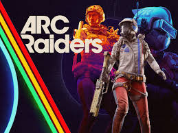
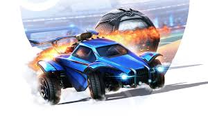

Mijn hobby's
Gamen
Gamen is mijn grootste hobby. Ik speel vaak met vrienden online games. Soms speel ik heel lang achter elkaar.

Rust

ARC Raiders

Rocket League

Rainbow Six Siege
Hardlopen
Ik ben ook begonnen met hardlopen. Ik heb nu twee keer een hardloop wedstrijd gedaan.
- Weerwater Run
- Muiderslotloop
Hardlopen is soms zwaar maar ook wel leuk om te doen.